F. Quercioli, B. Tiribilli, A. Mannoni, and S. Acciai
Istituto Nazionale di Ottica, Largo E. Fermi 6, 50125 Firenze (Italy)
ABSTRACT
The basic elements of a fairly complete optomechanical kit based on the use of LEGOa is presented. Through a careful exploitation of the many standard LEGO elements, and adding a few new simple components made of plexiglass, we demonstrate that almost all of the mechanical parts of an optical setup can be built with little effort and at an extremely reduced cost. Several systems and experiments are presented, mainly in the fields of optical filtering and interferometry, to show that the proposed mountings are perfectly suitable for didactic purposes, and can often be employed even in more demanding scientific applications. Keywords: Education in optics, optical mounts, modular systems.
1. INTRODUCTION
In professional optical equipments, mechanical components make up a sizeable part in terms of cost, weight and size. On the other side, consumer systems are increasingly relying on plastics to replace metal parts; there is even a well established trend towards replacing glass with high-quality transparent polymers in aspherical optical elements. In a laboratory setup for educational purposes (or even for research) low cost, reduced weight and compact size are all desirable characteristics. Versatility, quickness and ease of assembly are also extremely valuable. Commercial opto-mechanical components are still very far from representing a true achievement of such goals. In recent years a few companies have developed new products with these features in mind, some of them specifically devised for educational purposes. Even though weight, size and ease of use have been enhanced with respect to conventional optical mountings, costs are still high, and a few drops of adhesive or small pieces of plastic putty are still often required to adjust the various components to the experimenter’ s needs. In this communication we suggest the use of LEGO for educational-, or even research-grade optical mountings. LEGO is a highly modular construction system in which simple pieces (bricks, rods, beams, axles, gears, plates, hinges and so on) can be connected by means of the well-known (and patented) stud-and-tube coupling; the bricks and other shapes are moulded in ABS (acrylonitrile butadiene styrene) and the geometrical tolerances applied in the production process are quite tight: no more than two hundreds of mm from the nominal shape and size. As a consequence, the force needed to separate two elements reaches the remarkable figure of about 1.5-3.5 N for each stud-tube unit so that extremely large and complex structures, made up of fixed as well as of moving parts, can be safely assembled. The use of LEGO in scientific and technical education programs is not new, LEGO DACTA products being already mainly designed for didactic aims. With some modifications of the hundreds of standard LEGO elements, mainly of the TECHNIC series, and the introduction of a few home-made components, we have set up all of the basic opto-mechanical devices: holders, translation and rotation stages, xyz positioners, tilters, laboratory jacks, not to mention posts, bases, rails, and breadboards, that are all standard LEGO components. With these elements we have been able to build several instruments and systems, like microscopes and interferometers, demostrating the feasibility of using LEGO even in setups where a high degree of stability is required.
2. BASIC ELEMENTS
Some of the basic components of an optomechanical setup, like tilters and rotators, are already included, although usually in a very raw version, in commercially available LEGO kits. These elements can be used directly, without any modification, and are found to be suitable for static mountings, where the position is adjusted once and for all during the alignement phase. As for the realization of moving parts (such as translators), one has available off the shelf screws, gears, rails, tracks and other simple pieces with which even considerably complicated setups can be assembled. Just to have an idea of the level of sophistication that can be reached, we like to mention that a complete kit for building a full functioning plotter has been available for some time. The main drawback in building moving parts from standard LEGO elements is often the considerable size of the resulting assembly, and the consequent lack of mechanical stability that may result; again, this is not a serious problem when one wants to build components that are not meant to be adjusted continuously during the experiment: even complicated and bulky structures have been realized resorting to standard pieces only, such as for example a laboratory jack able to support a medium-power He-Ne laser tube. Lens and cube-splitter holders have also been constructed from the small beams and axles of various shapes that can be found in any LEGO kit and have shown remarkable characteristics, particularly as far as the ease of assembly and positioning is concerned; under this respect, they are even better than the usual mountings found in any optics lab, because the great number of different elements available in a LEGO box far surpasses that of any “professional” kit, making for instance the task of adjusting the height of the various components of an optical setup an easy one; anyone who has been struggling with this trivial but extremely annoying problem will be pleased to see that it can be solved with such a little effort, and with no severe reduction in the mechanical stability of the setup. Of course, in some cases standard beams and axles simply won’ t work properly, and that’ s why we have devised some custom components, sometimes resulting from a simple modification of existing ones and sometimes designed from scratch keeping in mind the existing realizations; in doing so, we have exploited the original LEGO material as far as possible, keeping the number of new parts at a minimum. As we wanted to keep as consistent an approach as possible to our goal of using only modular, easy-to-assemble plastic elements for our mountings, all custom pieces and components were machined from solid plexiglass; among these new elements we mention for instance the rods that guide the springs in our home-designed positioning stages, the precision screws that we use to impart a finely controllable motion to the moving parts, and the threaded adapters designed to hold in place microscope objectives. The mechanical characteristics of plexiglass are homogeneous with those exhibited by the ABS plastic LEGO is made from. We have as well avoided using particularly sophisticated designs: all the components can be easily machined in any mechanical shop with little effort. Should an interest arise in the scientific and teaching community, we deem that it would be perfectly feasible for the manufacturers of LEGO to produce most of these new components themselves. In the following we briefly describe some of the optomechanical devices that have been built, emphasizing the relevant constructive details of each of them; to keep things a little systematic, we divide the components into four basic categories: holders and adapters, translation stages, rotators, and tilters.
2.1. Holders and adapters
Several different components have been realized to perform the basic task of keeping optical elements firmly in place. The basic component is the lens holder (figure 1), which can also be used with filters, polarizers, pinholes and all geometrically adaptable elements; the stability provided by this simple assembly is quite good, so that it can be used to replace more conventional (that is, metal-made) holders in a large variety of applications. The same holds for the beam-splitter table illustrated in figure 2. A more refined component is the self-centering holder shown in figure 3; we emphasize that only standard LEGO elements were used here, with hinges fixed to the three rods that make up the triangular frame and three spring-loaded axles pushing on the edge of the lens (or whatever optical components one needs to use). The resulting structure is remarkably stable, and again it can provide a viable alternative to standard three-point mounts. Threaded pieces suitable to be matched to optical components like microscope objectives are not included in LEGO kits; one may think of machining the LEGO elements directly, but this is not feasible in this case: a much better solution is to obtain the threaded ring from a piece of plexiglass and then sandwich this adapter between two LEGO bases, to obtain a compact and at the same time stable assembly. A microscope objective adapter with standard microscope thread is shown in figure 4.
2.2. Translation stages
The basic design of a linear positioning stage is clearly recognizable in figure 5. In building this fundamental component we took advantage of the availability of a LEGO TECHNIC element which has basically the shape of a rectangular beam and carries a series of transversal holes through which circular rods and screws can be passed. One of the holes must be threaded to fit the precision screw (M6´0.5) through which we impart the motion; we point out that in this case, thanks to the particular design of this element, the thread is machined in the thickness of the walls of the hole, so that no plexiglass adapter is required. We have built several stages, each characterized by its own peculiar dimensions and by the different technical solutions exploited in their design: sometimes the loading is provided by small springs, while in other cases we have tried the use of rubber bands; the lateral rods have been either taken from standard LEGO kits or built from plexiglass, which seems to be a better choice (the section of the LEGO axles is not suitable to achieve a precise guiding of the moving part of the stage). Two- and three axis positioning stages (figure 6) have been constructed by simply putting together two or three linear positioners; the resulting assembly looks rather awkward but works just fine, enough to allow the realization of a low-pass filtered beam expander that we shall examine later. Among the main problems encountered we have to mention the difficulty in obtaining a truly linear motion; to improve this important point we think that a different section for the lateral rods should be exploited. Among the translation stages we may also include the laboratory jack of figure 7. As can be seen the component can easily carry a considerable load and provides a large vertical adjustment range; it is better either to fix it to a breadboard (a LEGO base plate) or to put some weight on its base, because in spite of its size the assembly is pretty light and may be unstable when carrying a heavy object.
2.3. Rotators
While linear positioning stages are relatively easy to design and to build, rotators do not lend themselves to the same kind of approach based on the principle of making only the slightest possible modifications to existing LEGO elements. In fact, even though some very raw rotating components exist in the LEGO gallery, they are unsuitable for precision work and have to be replaced with better designed ones. A picture of our rotator is reproduced in figure 8. The body of the component is made up of a plexiglass ring through which an off-axis hole is pierced; the top and bottom plates are obtained from a suitably cut LEGO sheet, and the motion is given by a precision screw that pushes a small cam glued to one of the bases (the other can be blocked by means of another screw). A small spring provides the necessary loading. The device works properly only for small angular displacements (as any rotator based on this kind of mechanical design does) and is a bit hard to build.
2.4. Tilters
We have developed essentially only one kind of tilter, based on a simple design, which has proved to provide very interesting performances. The mechanical assembly, shown in figure 9, is made up of two L-shaped structures made from LEGO plates, hinged by means of a small steel sphere and connected by plexiglass precision screws; the loading is provided either by springs or rubber bands as in the case of the translation stages. The mirror is glued on a tiny LEGO interfacing element and clutched at the corner of the “L”, on axis with the sphere. The assembly provides very accurate tilts thanks to its compact and tight design and to the considerable lever arm from the screws to the mirror. An extremely simple tilter can be constructed also by connecting together two hinges (or two hinged tables).
3. LABORATORY SETUPS
One of the first thing that is needed when building an optical setup is a breadboard; LEGO provides several plates of different size, up to 38´38 cm2 (48´48 studs), that can easily accommodate even complicated systems, with the advantage that you won’ t have to worry about metric or English hole patterns. Naturally, the stability of a LEGO base is nowhere close to that of a true breadboard, so precautions have to be taken to avoid bending; the easiest way to do this is to provide a hard flat surface to support the base: a reasonably good tabletop will usually do, and we have performed most of our experiments on a common office desk. The square pattern formed by the studs puts some geometrical constraints on the geometry of the setups that can be fastened to the surface of the base plate; if one were to connect bricks and beams directly to the base then only right angles could be obtained, but luckily this severe limitation can be easily overcome by using 1-stud bricks as posts. In this way, several directions can be chosen, forming different angles with the sides of the base plate; there are some angles and distances for which the linear elements fit perfectly in place, and others that are close enough to this matching condition that the fit can be obtained anyway, relying on a slight deformation of the pieces and the plate itself. We however emphasize that every time we have an imperfect match, tensions develop in the mounts and the whole assembly becomes less stable. Several optical instruments and systems have been mounted on our LEGO breadboard, and several experiments performed to show how an educational optics lab can take advantage of the proposed systems. One of the first instruments that were built was a microscope; the body of the instrument is made up of four plexiglas rods connecting two square bases 150 mm apart, and a cardboard tube to shield the collected rays’ path from ambient light. One of the two bases carries the objective and the other has a CCD camera mounted on it; as we image though a CCD, no eyepiece is needed. Figure 10 shows the microscope looking at the LEGO base plate, with the image of a stud forming on the monitor. The microscope was used both in transmitted and in reflected light; in the former case the sample was illuminated by a LED. A dark ground configuration was also realized stopping the central portion of the transmitted light in the Fourier plane; the result of this simple but educationally meaningful experiment is shown in figure 11. Many more optical filtering experiments were performed with the setup illustrated in figure 12 ; the critical component here is the xyz stage, made up of three linear positioners as described before, which carries the filter. In the simplest case (Schlieren filtering) the filter is just the edge of a small LEGO plate (one of the thin, smooth ones); putting two of these plates close to each other one obtains a slit that can be used, for example, to perform the Abbe-Porter experiment shown in figure 13. If one needs an adjustable slit, a lens holder of the type described above can be employed to keep it in place. A thin wire fixed to the xyz stage provides an easy means to realize a high-pass filter like that used in the well-known wire test. One of the most useful components realized is the beam expander and low-pass filter of figure 14; in this case the xyz positioner carries a 50 mm pinhole that has to be adjusted in the focal plane of the microscope objective (10´ magnification). The quality of the beam leaving the expander is quite good. Interferometers are undoubtedly among the most useful and instructive optical systems. One often thinks that, due to the small wavelength of light, an interferometer must be built with extremely demanding tolerances and so may be led to reject the use of plastics in such an instrument as complete nonsense. We show here that, despite the relatively coarse positioning capabilities of our translators and tilters, most interferometric configurations can be realized using LEGO elements as building blocks. The best known interferometer is probably that of Michelson, and so we decided to start with it (for the sake of precision the interferometer that we built is better identified as a Twyman-Green, which is just a Michelson working in collimated light); the source was a red diode laser of poor coherence, so that the path difference between the two arms of the interferometer had to be closely matched; to this aim, one of the tilters was mounted on top of a linear positioning stage, thus adding the possibility of working in white light. The fringes, after passing through a magnifying objective, were projected on a screen. Figure 15 shows the straight fringes obtained after the alignement procedure, that took about 5 minutes. Encouraged by the relative ease with which we could see the fringes in the Michelson we decided to build also a Mach-Zender. The source was a He-Ne as in the optical filtering experiments, so that we were free to choose the length of the two arms according to our needs. In this case the laser beam was expanded before entering the interferometer, and the fringes were both projected on a rotating ground glass imaged by a compact CCD camera and, by addition of a magnifying lens, on a white screen for direct inspection. This is probably the most complicated system that we have built thus far, and the aligning procedure was a bit more time-consuming. Anyway, the results are remarkably good, as shown in figure 16 and there are no serious problems as far as the stability of the fringes is concerned.
4. CONCLUSIONS
The feasibility of using LEGO for optical mounts has been demonstrated. The versatility of the LEGO system and the ease with which even complicated components and setups can be realized is sometimes almost astonishing. Fixed elements like holders and posts are those that present the least problems; under this respect, the objects presented in this communication can often replace heavier, bulkier and much more expensive “professional” components without affecting the performances of highly sensitive systems like interferometers. Moving parts are more critical because the mechanical tolerances with which LEGO is produced are not thought with scientific applications in mind. Nevertheless, resorting to some custom elements appropriately designed we have been able to build positioning stages, rotators and tilters whose accuracy and reliability are sufficient for realizing quite complicated experiments in interferometry, microscopy and Fourier optics, with an enormous advantage in terms of costs and, we believe, with more fun for the young student who is confronted with optical setups for the first time. We finally emphasize that the results presented here suggest that an integration between LEGO and conventional optomechanical elements made of aluminum or steel is indeed possible and that plastic-made components often exhibit adequate characteristics in terms of positioning accuracy and stability, to the point that they can successfully replace metallic mounts at a tiny fraction of the cost of the latter. If some more research were carried out, working on the most promising mechanical configuration, devising some new cleverly designed elements and maybe trying different polymers, LEGO may soon make its appearance on many optical benches.
LEGO, LEGO TECHNIC and LEGO DACTA are all trademarks of The LEGO Group.
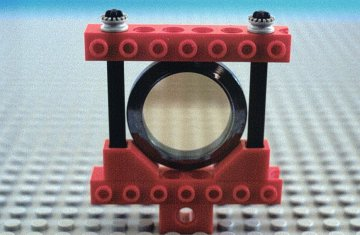
Fig. 1. Lens holder carrying a pellicle beam-splitter.
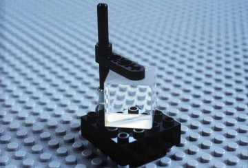
Fig. 2. Cube-splitter table.
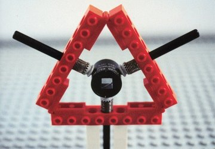
Fig. 3. Self-centering mount for lenses, filters and other components
carrying a Glan-Thompson crystal polarizer.
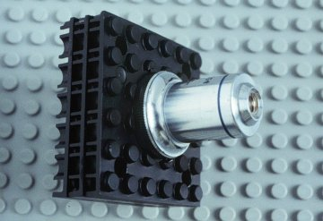
Fig. 4. Microscope objective adapter
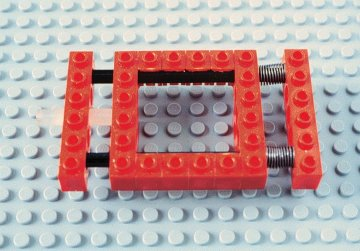
Fig. 5. Linear positioning stage
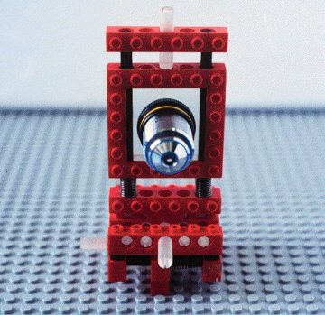
Fig. 6. Three-axis positioning stage made up of three linear translators.
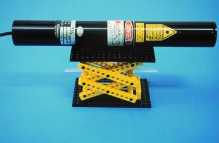
Fig. 7. Laboratory jack carrying a He-Ne laser tube. The approximate
weight of the laser is ~0.5 Kg.
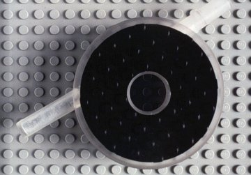
Fig. 8. Rotator built from plexiglass and suitably machined LEGO sheets.
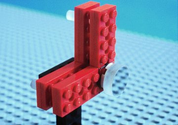
Fig. 9. Tilter with a 1/2-inch diameter mirror attached.
Fig. 10. Microscope looking at a detail of the LEGO pulley underneath.
Fig. 11. Dark-ground experiment with the microscope of figure 10. The
object is a metal crosswire.
Fig. 12. Optical setup used in our filtering experiments. The filter
is positioned by means of the three-axis stage already shown in figure
6.
Fig. 13. The Abbe-Porter experiment performed with our system. The slit
is formed by placing two tiny LEGO bricks close to each other.
Fig. 14. Beam expander with associated low-pass filter realized using
a 50-mm pinhole finely positioned by means of our three-axis stage.
Fig. 15. Twyman-Green interferometer. A microscope objective is used
to make the fringes observable.
Fig. 16. Mach-Zehnder interferometer. Two fringe patterns are formed, one on the screen on the right and another on the rotaing ground glass imaged by the ccd camera, as shown in the monitor.
F. Quercioli, A. Mannoni, B. Tiribilli, and S. Acciai, Optomechanics with LEGO, Appl. Opt., 37, 3408-3416 (1998).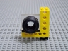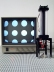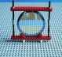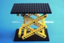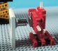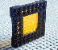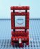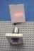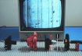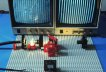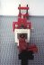 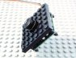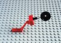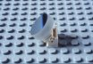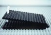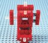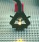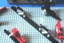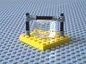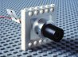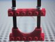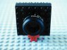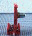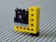
References
J. Bell, Toy box supplies parts for teacher’s light table, Opto & Laser Europe 44, 32-34 (1997).
Lego in the lab (Institute of Physics, 6 October 1997 )
"Scientific apparatus made of LEGO® is proving capable of reproducing some of the most demanding experiments in optics, reports the latest issue of the Institute of Physics’ magazine Opto & Laser Europe. The apparatus was developed as a low-cost means for teachers to demonstrate optoelectronics".
Optic scientists take a shine to Legoland (By Aisling Irwin, The Daily Telegraph, 30 September 1997)
"... Italian scientists have rejected their traditional lab equipment in favour of Lego, which they say is withstanding some of the most demanding experiments in optics".
Jobs for the toys (By Michael Brooks, The Guardian, 03 December 1997 )
"Reports on the big kids playing around with Lego and Tinkertoys in the name of science reports on the big kids playing around with Lego and Tinkertoys in the name of science".
"My name is Richard and I am an instructor at PCS Centers in Boise, Idaho. We use LEGO® material extensively and I am convinced you can teach a student anything using their products".
A huge number of LEGO Internet Resources
David A. Karr's LEGO® Collection
A great number of pointers to other W W W pages that feature LEGO
LEGO-Related Web Sites in Academia
"There are many Web pages at academic programs at all levels from fourth grade (or even lower) through graduate school and research institutions, involving the use of LEGO as a tool for education or research".
Lego Data Acquisition and Prototyping System
"Lego Prototyping in Aeronautics: A Novel Method for Integrating Science, Engineering, and Computers into K-6 Grade".
MIT 6.270 Autonomous Robot Design Competition
The famous MIT LEGO Robot Design Competition.
This is the FAQ for the rec.toys.lego newsgroup
The Epistemology and Learning Group of MIT Media Lab
"NEWS FLASH!! The LEGO Group has announced LEGO Mindstorms and the RCX Programmable Microcomputer Brick, inspired by the MIT Programmable Brick research!! (Fri Feb 13 08:18:54 1998)".
Of the Department of Artificial Intelligence, University of Edinburgh.
At Caltech (California Institute of Technology).
At the Department of Psychology, University of Sheffield, UK.
At the Department of Computer Science, University of Maryland, College Park.
At the Institute for Human and Machine Cognition, The University of West Florida.
At KISS Institute for Practical Robotics (KIPR).
OPTICS FOR KIDS: Science and Engineering
the Society for Amateur Scientists!
Last update: 05 June 1998
{kind=link}
{kind=link}
{kind=link}
{kind=link}
{kind=link}
{kind=link}
{kind=link}